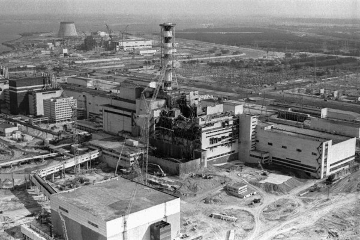
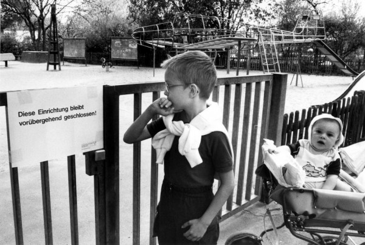
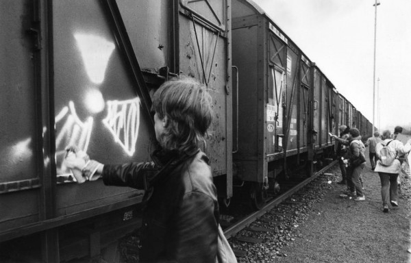
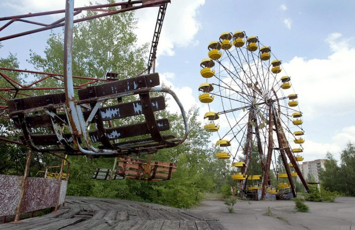
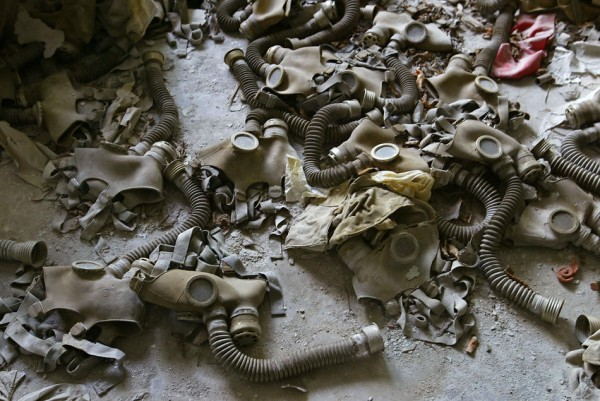
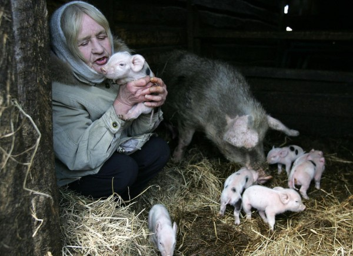
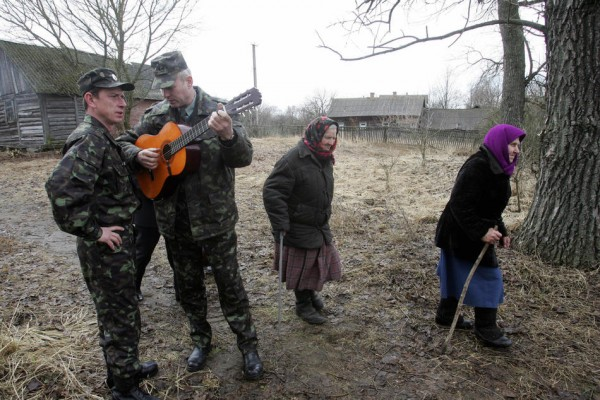
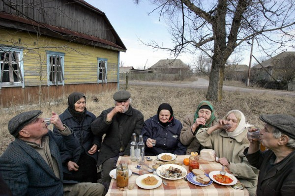

Плавящиеся топливные стержни и утечка радиации на АЭС Фукусима в Японии заставляют нас вновь задуматься о потенциальной опасности ядерной энергетики. В связи с последствиями цунами многие вспоминают о катастрофе в Чернобыле. 26 апреля будет 25 лет со дня этой черной даты в мировой атомной энергетике.
Чернобыльская катастрофа на Чернобыльской атомной электростанции в Украинской ССР 26 апреля 1986 года. На сегодняшний день только этой катастрофе на атомной станции присвоен 7 (самый высокий уровень) по Международной шкалы ядерных событий.
Авария произошла во время испытаний четвертого реактора Чернобыльской АЭС, размещенной вблизи города Припять. Радиоактивные выбросы в атмосферу в результате аварии покрыли значительные территории в том числе саму Припять. Большие территории на Украине, Беларуси и России были эвакуированы, более 336 000 человек были переселены. 60% радиоактивных выпадов по официальным данным пришлось на территорию Беларуси.
Чернобыль 80-х

{kind=link}


Чернобыль 2000-х




